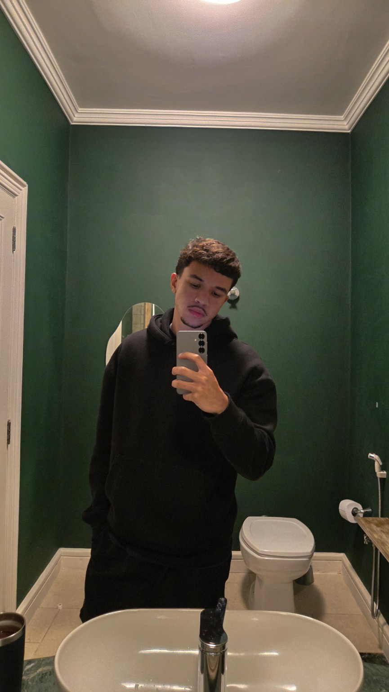

Henrique dos Santos Ramalho
- RM
- 575759
- GitHub
- henriqueramalho299
- Henrique Ramalho no LinkedIn
Quem constrói o projeto
O Conecta Campus é um projeto acadêmico de Análise e Desenvolvimento de Sistemas da FIAP, voltado à consulta de ambientes, serviços e recursos de acessibilidade.
